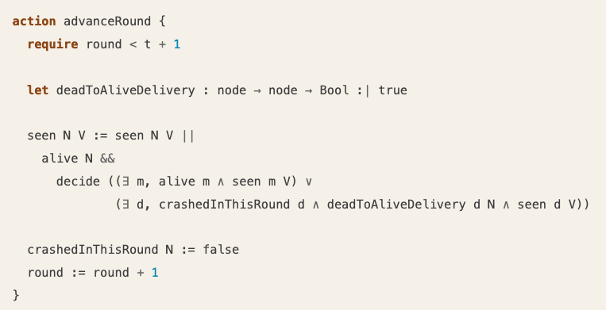
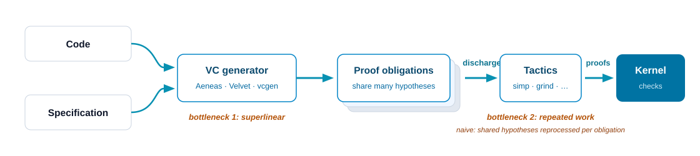

Software Verification in Lean
Recap
-
Lecture 1: propositions are types; proofs are terms; the kernel checks everything.
-
Lecture 2: inductive types, type classes, macros; proofs about programs; generalize the invariant.
-
Lecture 3:
simp,grind,bv_decide; AI writes proofs, the kernel checks them.
Today: put the pieces together — a verification framework, built inside Lean, and the engineering required to make one scale.
Today
-
Verification frameworks in industrial use, all built as Lean libraries.
-
A verification condition generator for a small imperative language — with a soundness theorem.
-
The same programs, shallowly embedded; symbolic execution as a metaprogram.
-
Scalability: where the time goes, and the
SymMframework.
Verification Frameworks as Lean Libraries
From the course abstract:
Lean's extensibility enables the construction of entire domain-specific verification frameworks, including custom specification languages, proof strategies, and automation pipelines, all within Lean itself, with no need for external tools or trusted code generators.
SampCert (AWS): Verified Differential Privacy
An open-source Lean library of formally verified differential privacy primitives.
-
The verified implementation replaced a previous one — and is twice as fast.
-
The correctness arguments need real mathematics: Fourier analysis, number theory, topology — supplied by Mathlib.
-
Deployed in AWS Clean Rooms Differential Privacy.
-
PLDI 2025: "Verified Foundations for Differential Privacy."
"I started using Lean because of Mathlib, but I realized that Lean isn't just an excellent proof assistant, it's also a very pleasant and efficient programming language with a great ecosystem." — Jean-Baptiste Tristan
Waimea (AWS): a Verified Compiler for Trainium
CompCert-style verified compiler for AWS Trainium, Amazon's AI accelerator. ~500,000 lines of Lean.
-
The ISA specification changes several times per week — not a fixed target like x86.
-
The Lean model doubles as a simulator shared by hardware and verification engineers.
-
Used to find hardware and simulator bugs, and to prove the correctness of hardware optimizations.
-
Long-term goal: end-to-end compilation with a semantics-preservation proof.
Kraken (Google): x64 Semantics in Lean
Kraken: a formal model of x64 for verifying sequential machine code. Jonathan Protzenko and Andres Erbsen; started after the Lean@Google hackathon, December 2025.
-
This lecture's architecture, applied to an instruction set: embed the machine language, give it a semantics, verify against it.
-
The semantics is designed for proof automation, with lessons from Bedrock2: the interpreter either computes a weakest precondition or a final state.
-
x64 today; arm64 in progress; RISC-V on the roadmap.
-
Status: pre-alpha — the tactic layer still needs Lean-side support to prove non-trivial programs. Andres returns in the scalability section, where exactly that Lean-side support is the subject.
Veil: Verified Distributed Protocols
Veil: verification of distributed protocols, built on Lean via metaprogramming. Pîrlea, Gladshtein, Kinsbruner, Zhao, Sergey.
-
Push-button verification through SMT (cvc5/Z3) for decidable fragments; full interactive Lean proofs when automation falls short.
-
Foundational: Veil's VC generator is proven sound with respect to the specification language semantics.
-
16 distributed protocol case studies; all 16 verified (Ivy failed on 2); 87.5% verified in under 15 seconds.

Strata (AWS): Language Syntax and Semantics
Strata: an extensible platform for formalizing language syntax and semantics. Open source.
-
Organizing idea: dialects (inspired by MLIR) — composable building blocks for modeling programming constructs.
-
Pipeline example: Python/Java/JavaScript → Laurel → Strata Core → VC generation → SMT.
-
The dialect definition mechanism is an embedded DSL in Lean — the macro machinery from Lecture 2, at industrial scale.

A Common Structure
Each of these systems has the same architecture:
-
Embed the object language (Rust, a protocol language, an ISA) in Lean.
-
Give it a semantics — a function or an inductive relation.
-
Compute verification conditions.
-
Discharge them —
simp,grind,bv_decide, interactive proofs.
Signal Shot —
verifying the Signal protocol and its Rust implementation (Signal, the
Beneficial AI Foundation, and the Lean FRO) — is assembling exactly
these components: Aeneas, Mathlib and CSLib, grind and SymM, AI.
A Small Verifier, End to End
The code is in the exercises project.
The Language: Imp
def Assertion : Type := State → Prop
inductive Stmt where
| skip
| assign (x : String) (e : Expr)
| seq (s₁ s₂ : Stmt)
| ite (c : BExpr) (s₁ s₂ : Stmt)
| whileDo (c : BExpr) (inv : Assertion) (body : Stmt)
-
State, itsget/setAPI and notation, and the expression evaluator are Lecture 2's, unchanged;BExpradds boolean tests. OnlyStmtis new. -
whileDocarries an invariant annotationinv— input for the verifier. The semantics will ignore it.
The [Imp| ...] Grammar
declare_syntax_cat impStmt
syntax ident " := " term "; " : impStmt
syntax "if" " (" term ")" " {" impStmt* "}" " else" " {" impStmt* "}" : impStmt
syntax "while" " (" term ")" ppLine " {" impStmt* "}" : impStmt
syntax "while" " (" term ")" " invariant" " (" term ")" ppLine " {" impStmt* "}" : impStmt
syntax "[Imp|" impStmt* "]" : term
open Lean in
macro_rules
| `([Imp| ]) => `(Stmt.skip)
| `([Imp| $x:ident := $e:term;]) => `(Stmt.assign $(quote x.getId.toString) [Expr| $e])
| `([Imp| if ($c) { $ts* } else { $es* }]) => `(Stmt.ite [BExpr| $c] [Imp| $ts*] [Imp| $es*])
| `([Imp| while ($c) { $bs* }]) => `(Stmt.whileDo [BExpr| $c] (fun _ => True) [Imp| $bs*])
| `([Imp| while ($c) invariant ($I) { $bs* }]) => `(Stmt.whileDo [BExpr| $c] $I [Imp| $bs*])
| `([Imp| $s $ss*]) => `(Stmt.seq [Imp| $s] [Imp| $ss*])
-
declare_syntax_catcreates a new syntactic category: statements are not terms — they get their own grammar, andimpStmt*means "a sequence of them". Lecture 2's[Expr|extended thetermgrammar; a statement language needs its own. -
[Imp| ...]is the bridge back: a term whose contents are parsed with the statement grammar. ([Expr|and[BExpr|are analogous, and hidden here.)
Concrete Syntax
def factorial : Stmt := [Imp|
n := 10;
r := 1;
while (0 < n) {
r := r * n;
n := n - 1;
}
]
-
After elaboration the quotation is gone:
factorial : Stmt, ordinary data built fromseq,assign, andwhileDo. -
σ⟦x⟧/σ⟦x := v⟧are Lecture 2's notation. Unexpanders print states and programs back in the same syntax — goals stay readable while stepping.
Operational Semantics
inductive BigStep : State → Stmt → State → Prop where
| skip :
BigStep σ .skip σ
| assign :
BigStep σ (.assign x e) (σ.set x (e.eval σ))
| seq (h₁ : BigStep σ s₁ σ') (h₂ : BigStep σ' s₂ σ'') :
BigStep σ (.seq s₁ s₂) σ''
| ifTrue (hc : c.eval σ = true) (h : BigStep σ s₁ σ') :
BigStep σ (.ite c s₁ s₂) σ'
| ifFalse (hc : c.eval σ = false) (h : BigStep σ s₂ σ') :
BigStep σ (.ite c s₁ s₂) σ'
| whileTrue (hc : c.eval σ = true) (hbody : BigStep σ body σ')
(hrest : BigStep σ' (.whileDo c inv body) σ'') :
BigStep σ (.whileDo c inv body) σ''
| whileFalse (hc : c.eval σ = false) :
BigStep σ (.whileDo c inv body) σ
-
BigStep σ s σ': executingsfrom stateσterminates inσ'. -
One constructor per rule; derivations are finite, so the relation captures terminating runs.
-
The invariant annotation is ignored — it has no semantic content.
Executing Programs
def Stmt.runGet (s : Stmt) (x : String) (fuel : Nat := 1000) : Option Int :=
(s.run State.init fuel).map (·.get x)
#eval factorial.runGet "r"
#guard factorial.runGet "r" = some 3628800
#guard factorial.runGet "n" = some 0
-
A fuel-bounded interpreter (Lecture 2's pattern for possibly nonterminating recursion) makes programs executable.
-
#guardtests before proofs, as always.
The Interpreter, Verified
#check Stmt.run_mono
#check Stmt.run_sound
#check Stmt.run_complete
#check BigStep.deterministic
-
Sound: whatever the interpreter computes, the semantics derives. Complete: whatever the semantics derives, some fuel computes. Together:
runandBigStepdescribe the same language, so every#guardon the previous slide is a theorem about the semantics. -
All of it is in the exercises, with hints; fuel monotonicity is the workhorse lemma.
Specifications: Hoare Triples
def Triple (P : Assertion) (s : Stmt) (Q : Assertion) : Prop :=
∀ σ σ', P σ → BigStep σ s σ' → Q σ'
def Stmt.wlp (s : Stmt) (Q : Assertion) : Assertion :=
fun σ => Triple (· = σ) s Q
theorem wlp_iff (s : Stmt) (Q : Assertion) (σ : State)
: s.wlp Q σ ↔ ∀ σ', BigStep σ s σ' → Q σ' := by
unfold Stmt.wlp Triple; simp; constructor
· intro h σ';
exact h σ σ' rfl
· intro h σ' σ'' he hb
subst σ'
apply h σ'' hb
theorem Triple_iff_wlp (P : Assertion) (s : Stmt) (Q : Assertion)
: Triple P s Q ↔ ∀ σ, P σ → s.wlp Q σ := by
simp [wlp_iff, Triple]; grind
-
Partial correctness: if
Pholds initially andsterminates, thenQholds finally. -
s.wlp Qis the safe region ofs— every terminating run fromσestablishesQ. This is Dijkstra's weakest liberal precondition. -
Not a new logic:
Tripleis a definition, and the "rules" of Hoare logic will be ordinary theorems about it.
The Rules Are Theorems
theorem Triple.skip (Q : Assertion) : Triple Q .skip Q := by
intro σ σ' h hstep
cases hstep
exact h
theorem Triple.assign (Q : Assertion) (x : String) (e : Expr) :
Triple (fun σ => Q (σ.set x (e.eval σ))) (.assign x e) Q := by
intro σ σ' h hstep
cases hstep
exact h
theorem Triple.consequence (h : Triple P s Q)
(hpre : ∀ σ, P' σ → P σ) (hpost : ∀ σ, Q σ → Q' σ) :
Triple P' s Q' := by
intro σ σ' hP' hstep
exact hpost _ (h _ _ (hpre _ hP') hstep)
-
Proof method: unfold
Triple, invert the derivation withcases— for a fixed statement shape, only matchingBigStepconstructors apply. -
consequenceis the structural rule: weaken the precondition, strengthen the postcondition. -
The assignment rule pushes the postcondition backwards through the update — nothing is computed forwards.
Applying the Assignment Rule
example (a : Int) :
Triple (fun σ => σ⟦x⟧ = a)
(.assign "y" (.const 0))
(fun σ => σ⟦x⟧ = a ∧ σ⟦y⟧ = 0) := by
apply Triple.assign
theorem Triple.assign' (P Q : Assertion) (x : String) (e : Expr) :
(∀ σ, P σ → Q (σ.set x (e.eval σ))) →
Triple P (.assign x e) Q :=
fun h => Triple.consequence (Triple.assign Q x e) h (fun _ h => h)
-
Triple.assign's precondition has a fixed shape — the postcondition pushed through the update. An arbitrary precondition does not unify with it, soapplyfails. -
Triple.assign'fusesassignwithconsequence— the proof term is the combination. It applies to any pre/postcondition, leaving an ordinary implication. -
The design rule: theorems meant for
applymust be stated for arbitrary goals.
Sequencing Without Metavariables
theorem Triple.seq (h₁ : Triple P s₁ R) (h₂ : Triple R s₂ Q) :
Triple P (.seq s₁ s₂) Q := by
intro σ σ' hP hstep
cases hstep with
| seq hs₁ hs₂ => exact h₂ _ _ (h₁ _ _ hP hs₁) hs₂
theorem Triple.seq' :
Triple P s₁ (fun σ => Triple (· = σ) s₂ Q) →
Triple P (.seq s₁ s₂) Q := by
intro h₁ σ₁ σ₃ hp hb
cases hb
next σ₂ h₂ h₃ => exact h₁ σ₁ σ₂ hp h₂ σ₂ σ₃ rfl h₃
-
Applying
seqinvents a metavariable for the intermediate assertionR, shared by two goals — filling it falls to unification and elaboration order. -
seq'produces one goal and no metavariables: its postcondition is definitionallys₂.wlp Q— the safe region ofs₂, from the Triples slide. -
Intermediate states later enter as
intro-bound variables, not holes.
The While Rule
theorem Triple.whileDo {inv : Assertion}
(h : Triple (fun σ => I σ ∧ c.eval σ = true) body I) :
Triple I (.whileDo c inv body) (fun σ => I σ ∧ c.eval σ = false) := by
intro σ σ' hI hstep
exact Triple.whileDo_aux h hstep rfl hI
theorem Triple.whileDo' {inv : Assertion}
(hpre : ∀ σ, P σ → inv σ)
(hbody : Triple (fun σ => inv σ ∧ c.eval σ = true) body inv)
(hpost : ∀ σ, inv σ → c.eval σ = false → Q σ) :
Triple P (.whileDo c inv body) Q :=
Triple.consequence (Triple.whileDo hbody) hpre (fun σ h => hpost σ h.1 h.2)
-
The proof of
whileDoneeds the technique from Lecture 2: generalize the statement before inducting on the derivation. -
whileDoignores its annotation (it has no semantic role), and its fixed shape blocksapply— the assignment story again. -
Triple.whileDo'fuses it withconsequenceand takes the invariant from the annotation: it applies to any goal, with no metavariable — and its three premises are entry, preservation, and exit: the loop's verification conditions, before we ever definevc.
A First Verified Program
def swapProg := [Imp|
t := x;
x := y;
y := t;
]
theorem swap_correct (a b : Int) :
Triple (fun σ => σ⟦x⟧ = a ∧ σ⟦y⟧ = b)
swapProg
(fun σ => σ⟦x⟧ = b ∧ σ⟦y⟧ = a) := by
have h := (Triple.assign _ "t" (.var "x")).seq
((Triple.assign _ "x" (.var "y")).seq
(Triple.assign (fun σ => σ⟦x⟧ = b ∧ σ⟦y⟧ = a) "y" (.var "t")))
refine Triple.consequence h ?_ (fun _ h => h)
intro σ hσ
simp only [Expr.eval]
grind
-
Compose the rules backwards from the postcondition;
consequencecloses the gap to the specification;grindhandles the state bookkeeping with the two[grind =]lemmas from Lecture 3. -
Correct, but manual — one rule application per statement.
Stepping Through the Program
theorem swap_correct' (a b : Int) :
Triple (fun σ => σ⟦x⟧ = a ∧ σ⟦y⟧ = b)
swapProg
(fun σ => σ⟦x⟧ = b ∧ σ⟦y⟧ = a) := by
unfold swapProg
apply Triple.seq'
apply Triple.assign'
intro σ₁ h₁
apply Triple.seq'
apply Triple.assign'
intro σ₂ h₂
apply Triple.assign'
intro σ₃ h₃
simp [Expr.eval] at *
grind
-
Only the
apply-friendly rules appear:seq'(no metavariables) andassign'(any precondition) — the design from the previous slides, in action. -
The proof follows the structure of the program, one rule application per statement, receiving each intermediate state with
intro— symbolic execution, in the deep embedding. -
This style returns twice today: in the shallow embedding, and in
SymM, whose benchmark drives exactly thisseq'rule.
The Precondition Transformer
def Stmt.pre : Stmt → Assertion → Assertion
| .skip, Q => Q
| .assign x e, Q => fun σ => Q (σ.set x (e.eval σ))
| .seq s₁ s₂, Q => s₁.pre (s₂.pre Q)
| .ite c s₁ s₂, Q => fun σ => if c.eval σ then s₁.pre Q σ else s₂.pre Q σ
| .whileDo _ inv _, _ => inv
-
The backwards composition of
swap_correct, as a function — and a loop's precondition is its annotated invariant: the annotation we built intoStmtfinally does its job. -
This is the textbook construction: Nipkow & Klein, Concrete Semantics, §12.2.2 defines
preandvc(same names) over annotated commands; Gordon's Hoare-logic notes (ch. 3) and Software Foundations (Hoare2) present the same generator.
The Verification Conditions
def Stmt.vc : Stmt → Assertion → Prop
| .skip, _ => True
| .assign _ _, _ => True
| .seq s₁ s₂, Q => s₁.vc (s₂.pre Q) ∧ s₂.vc Q
| .ite _ s₁ s₂, Q => s₁.vc Q ∧ s₂.vc Q
| .whileDo c inv body, Q =>
(∀ σ, inv σ → c.eval σ = true → body.pre inv σ) ∧
(∀ σ, inv σ → c.eval σ = false → Q σ) ∧
body.vc inv
-
vccollects what remains to be proved: for each loop, preservation of its invariant and the exit implication;skipandassigncontribute nothing. -
On loop-free programs
vcis a conjunction ofTrues — no proof obligations at all;prealone carries the meaning.
The Soundness Theorem
#check vcgen_sound
theorem Stmt.verify (s : Stmt) (P Q : Assertion)
(hvc : s.vc Q) (hpre : ∀ σ, P σ → s.pre Q σ) : Triple P s Q :=
Triple.consequence (vcgen_sound s Q hvc) hpre (fun _ h => h)
-
vcgen_sound: discharge the VCs and the triple holds. Proved by induction; the loop case isTriple.whileDo'applied to the induction hypothesis.
swap, Revisited
macro "vcg" : tactic => `(tactic|
apply Stmt.verify <;>
try simp [Stmt.vc, Stmt.pre, Expr.eval, BExpr.eval])
example (a b : Int) :
Triple (fun σ => σ⟦x⟧ = a ∧ σ⟦y⟧ = b)
swapProg
(fun σ => σ⟦x⟧ = b ∧ σ⟦y⟧ = a) := by
unfold swapProg
vcg <;> grind
-
vcgis a two-line tactic macro: applyStmt.verify, then unfold the computedvcandpre.swapis loop-free, so no verification conditions survive; the one remaining goal is the entailment between specification and computed precondition —grinddischarges it. -
On the loop-free fragment,
precomputes Dijkstra's weakest liberal precondition — weakest provably, not just by name (exercise extension); liberal means partial correctness, where Dijkstra'swpadditionally requires termination. -
On loops,
prereturns the annotation: sound, but only as weak as the invariant you wrote. Finding invariants is the creative step.
A Loop, Verified
def copyProg (a : Int) := [Imp|
y := 0;
while (0 < x) invariant (fun σ => σ⟦x⟧ + σ⟦y⟧ = a ∧ 0 ≤ σ⟦x⟧) {
x := x - 1;
y := y + 1;
}
]
theorem copy_correct (a : Int) :
Triple (fun σ => σ⟦x⟧ = a ∧ 0 ≤ a)
(copyProg a)
(fun σ => σ⟦y⟧ = a) := by
unfold copyProg
vcg <;> grind
-
The same
vcg <;> grindas forswap— but this time obligations survive: the loop's verification conditions.grinddischarges them — state bookkeeping by E-matching, arithmetic bycutsat. -
Choosing the invariant is the only creative step.
Stepping Through the Loop
theorem copy_correct' (a : Int) :
Triple (fun σ => σ⟦x⟧ = a ∧ 0 ≤ a)
(copyProg a)
(fun σ => σ⟦y⟧ = a) := by
unfold copyProg
apply Triple.seq'
apply Triple.assign'
intro σ₁ h₁
apply Triple.whileDo'
· intro σ h
simp [Expr.eval] at *
grind
· apply Triple.seq'
apply Triple.assign'
intro σ₂ h₂
apply Triple.assign'
intro σ₃ h₃
simp [Expr.eval, BExpr.eval] at *
grind
· intro σ hI hc
simp [BExpr.eval, Expr.eval] at hc
grind
Shallow Embeddings
Removing the object language.
Programs as Lean Programs
def Triple (P : S → Prop) (k : StateM S α) (Q : α → S → Prop) : Prop :=
∀ s, P s → Q (k s).1 (k s).2
def double : StateM Nat Unit := do
let s ← get
set (s + s)
-
Imp was a deep embedding: programs are data, semantics is a relation. Shallow alternative: programs are ordinary monadic Lean code in Lecture 2's
StateM— the style of mvcgen, Velvet, and Aeneas. -
The judgment is the same Hoare triple; only the semantics changed. A
StateMprogram is a function, so "every terminating run" is the run: quantifying overBigStep σ s σ'becomes running the program —(k s).1the returned value,(k s).2the final state. -
No inductive semantics needed, and partial and total correctness coincide (
StateMprograms are total and deterministic).
One Rule per Construct
theorem Triple.get (h : ∀ s, P s → Q s s) : Triple P get Q := by
intro s hP
simp [MonadState.get, getThe, MonadStateOf.get, StateT.get, Pure.pure]
exact h _ hP
theorem Triple.bind (k₁ : StateM S α) (k₂ : α → StateM S β)
(Q : β → S → Prop)
(h : Triple P k₁ (fun a s => Triple (· = s) (k₂ a) Q)) : Triple P (k₁ >>= k₂) Q := by
intro s hP
exact h s hP (k₁ s).2 rfl
-
Part A's design carries over verbatim: every rule is primed — arbitrary
P, no metavariables.Triple.gethas the shape ofassign';Triple.bindisseq', with the result valueapassed to the continuation. -
The proofs are all simple.
-
Rules for
pure,set,modify,ite, andconsequencecomplete the set.
Symbolic Execution by apply
example (a : Nat) : Triple (· = a) double (fun _ s => s = 2 * a) := by
unfold double
apply Triple.bind
apply Triple.get
intro s h
apply Triple.set
intro s' h'
grind
-
The same stepping discipline as
swapandcopyProgin part A:applythe rule for the head of the program,introthe reached state. -
The final goal is the verification condition
s + s = 2 * a, withh : s = ain context. -
Entirely mechanical — the rule is determined by the head of the program.
A Metaprogram: Dispatch on the Head
open Lean Elab Tactic in
elab "sym_step" : tactic => do
let goal ← getMainGoal
let tgt ← goal.withContext do instantiateMVars (← goal.getType)
let_expr Triple _ _ _ k _ := tgt.headBeta
| throwError "sym_step: not a `Triple` goal"
let app (r : Name) : TacticM Unit := do
evalTactic (← `(tactic| apply $(mkIdent r) <;> intro _ _))
match k.getAppFn.constName? with
| some ``Bind.bind => evalTactic (← `(tactic| apply Triple.bind))
| some ``get => app ``Triple.get
| some ``set => app ``Triple.set
| some ``modify => app ``Triple.modify
| some ``pure => app ``Triple.pure
| some ``ite => evalTactic (← `(tactic| apply Triple.ite <;> intro _))
| _ => throwError "sym_step: no rule for{indentExpr k}"
macro "sym_run" : tactic => `(tactic| repeat' sym_step)
-
A tactic is a Lean program: read the goal, inspect the head, apply the matching rule — twenty lines. (Trying the rules blindly with
applywould send the unifier unfolding>>=andStateT; dispatching on the head avoids the search.) -
This is the metaprogramming promised in the abstract, in its smallest useful form.
Recursion Becomes Induction
def addN : Nat → StateM Nat Unit
| 0 => pure ()
| n + 1 => do
modify (· + 1)
addN n
theorem addN_correct (n : Nat) (a : Nat) :
Triple (· = a) (addN n) (fun _ s' => s' = a + n) := by
induction n generalizing a with
| zero => simp only [addN]; sym_run; grind
| succ n ih =>
simp only [addN]
sym_run
exact Triple.consequence (ih _) (fun _ h => h) (by grind)
-
sym_runexecutes up to the recursive call; the induction hypothesis plays the role of the loop invariant.generalizing a— Lecture 2's lesson, again: the recursive call starts from a different state. -
Triple.consequencebridges the induction hypothesis to the goal, the same role it played in part A.
Scalability
VC Generation in Practice
A VC generator turns code and specifications into proof obligations. Lean-based examples of the idiom we just built:
-
Aeneas — Rust verification via translation to Lean.
-
Velvet — a Dafny-style verifier built in Lean.
-
mvcgen — Lean's VC generator for monadic programs.

Verification condition generation with proof assistants has historically not scaled — documented for Rocq by Chlipala's group, and the same held in Lean.
A Minimal Scaling Benchmark
Andres Erbsen (Google; Bedrock2, Fiat
Cryptography) distilled the problem into a minimal challenge at the
Lean@Google hackathon: symbolically execute a generated n-step
program — the apply/simp loop from this lecture, at size n.

With Lean's general-purpose tactic framework (MetaM): superlinear —
2073 ms at n = 100, failure before n = 700.
Where the Time Goes
The symbolic execution loop needs:
-
efficient
apply— no unification search (the reasonsym_stepdispatches on the head); -
efficient metavariable management;
-
term sharing preserved by every operation — no copied trees;
-
simplifier results cached and reused across obligations and steps;
-
no repeated traversal of the same subterms.
General-purpose tactic frameworks pay for flexibility these loops do not need — arbitrary proof-state surgery, full definitional unfolding in matching.
SymM
A monadic framework for symbolic simulation and VC generation, in the Lean sources.
-
The key invariant: the local context grows monotonically — no reverts, no deletions. Then pointer equality is a valid cache key, and automation state survives from one VC to the next.
-
Precompiled backward rules; mostly-syntactic matching in the hot path.
-
A new simplifier: pointer-keyed caches on maximally shared terms, binder traversal without quadratic cost.
-
grindstate threaded through the VC loop: facts learned once are reused across obligations.
SymM: Measurements


On the benchmark above: 16 ms at n = 100 (vs. 2073 ms) — about 100×; linear out to n = 700.
Ported Frameworks


-
mvcgen (Sebastian Graf): linear out to n = 1000 on the challenge.
-
Velvet (V. Gladshtein): previously ~3× slower than Dafny; after the port, faster on 24 of 27 benchmarks. Dafny trusts its VC generator and an SMT solver; Velvet's chain is checked by the kernel.
-
DyLean (T. Wallez, cryptographic protocols):
SymM+ incrementalgrindgave a 50× speedup in VC discharge.
The Course, in Summary
-
Foundations: dependent type theory; propositions as types; the kernel as the single arbiter.
-
Programming and proving: inductive types, type classes, macros; design lemmas so proofs follow definitions.
-
Automation:
simp,grind,bv_decide— inspectable, extensible, kernel-checked; AI as a user of the same machinery. -
Verification: Hoare logic as theorems, VC generation as a verified function, symbolic execution as a metaprogram, and the engineering that scales it — all inside Lean: one kernel checks programs, specifications, proofs, and the verifier itself.
Where to Go from Here
-
Exercises:
Lecture4.lean(the VC generator) andLecture4b.lean(shallow embedding +sym_step) — both with full solutions and notes. -
Theorem Proving in Lean 4 · Functional Programming in Lean · the reference manual
-
CSLib — a growing library of computer science foundations; contributions welcome.
-
Mathlib — the mathematical library.
-
Iris Lean — concurrent separation logic, being ported to Lean.